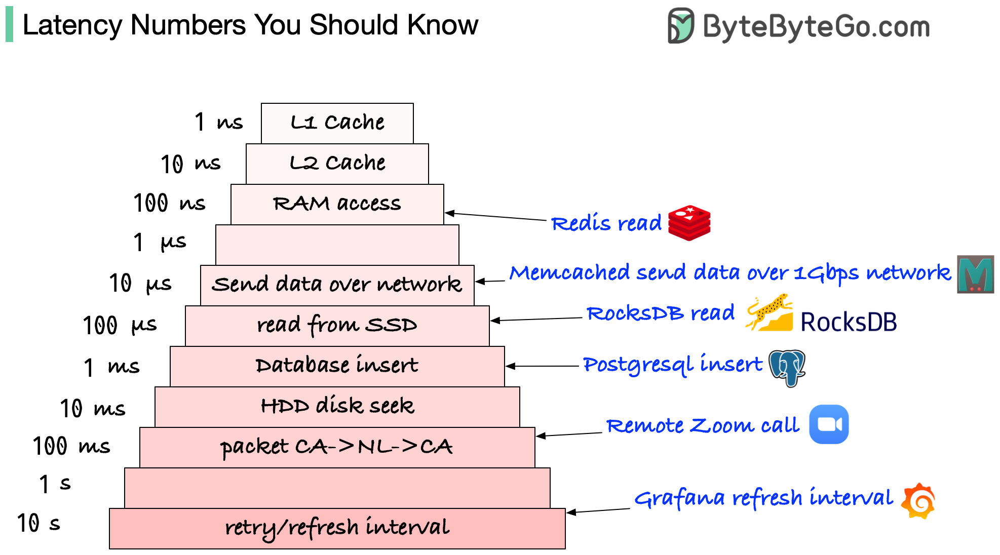

Please note those are not accurate numbers. They are based on some online benchmarks (Jeff Dean’s latency numbers + some other sources).

L1 and L2 caches: 1 ns, 10 ns
E.g.: They are usually built onto the microprocessor chip. Unless you work with hardware directly, you probably don’t need to worry about them.
RAM access: 100 ns
E.g.: It takes around 100 ns to read data from memory. Redis is an in-memory data store, so it takes about 100 ns to read data from Redis.
Send 1K bytes over 1 Gbps network: 10 us
E.g.: It takes around 10 us to send 1KB of data from Memcached through the network.
Read from SSD: 100 us
E.g.: RocksDB is a disk-based K/V store, so the read latency is around 100 us on SSD.
Database insert operation: 1 ms
E.g.: Postgresql commit might take 1ms. The database needs to store the data, create the index, and flush logs. All these actions take time.
Send packet CA->Netherlands->CA: 100 ms
E.g.: If we have a long-distance Zoom call, the latency might be around 100 ms.
Retry/refresh internal: 1-10s
E.g: In a monitoring system, the refresh interval is usually set to 5~10 seconds (default value on Grafana).
1 ns = 10^-9 seconds 1 us = 10^-6 seconds = 1,000 ns 1 ms = 10^-3 seconds = 1,000 us = 1,000,000 ns